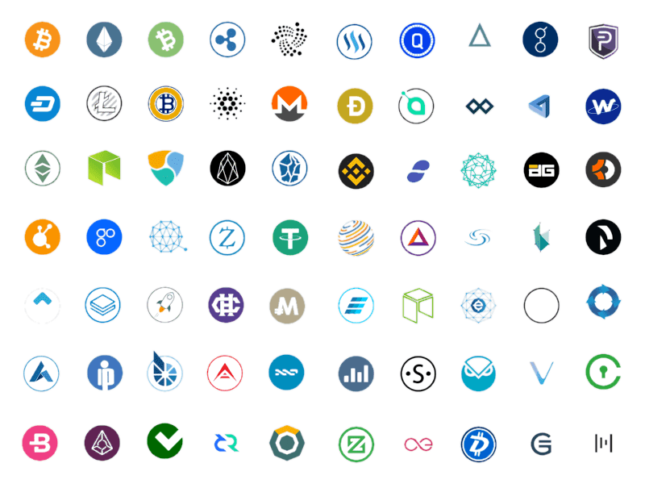
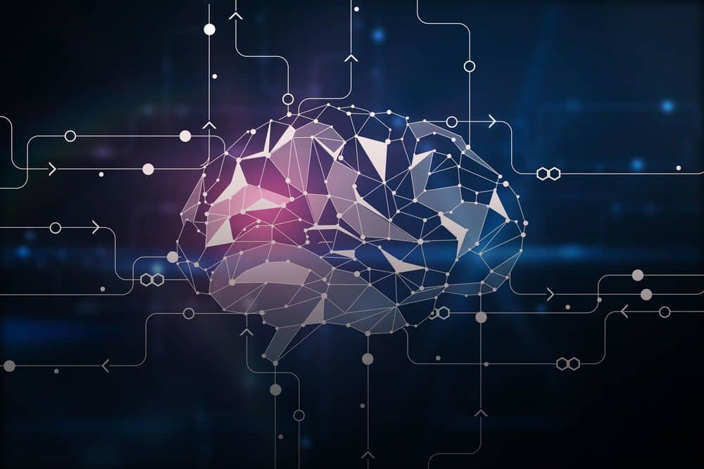
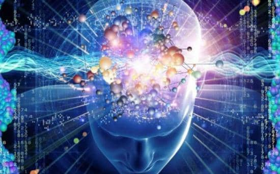
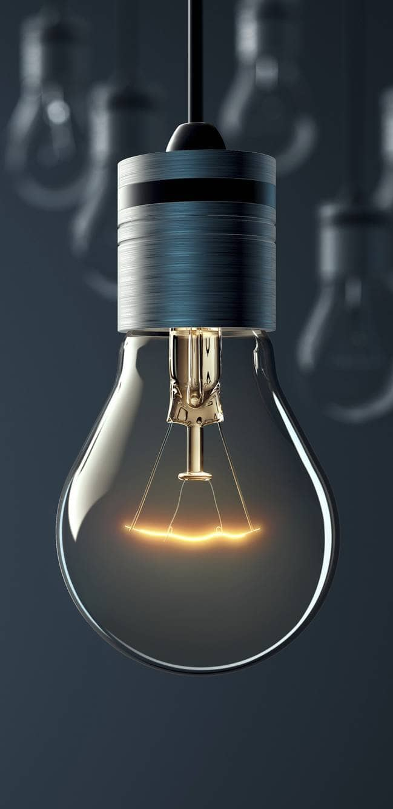
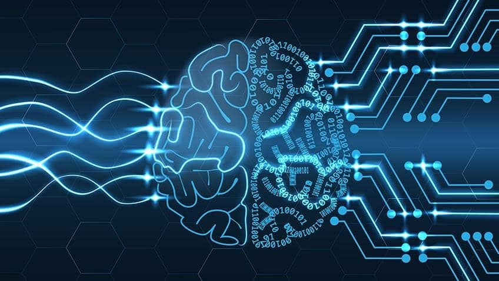
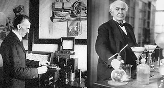
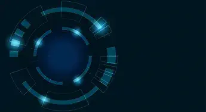

Other Things
Big data
A Little Music
A Little Food
A Thought
The Brain
A Little Business
“I have not failed. I have just found 10,000 variations that will not work.” — Thomas A. Edison
It is all about information
Information.
The information.
Who we are, how you are brought up and what you become is about information.
If you can find information faster than you can take a bite of a muffin, it means you have become part of a historic moment and milestone.
When the internet appeared in our lifetime, it changed everything, forever.
Information was beginning to spread and be shared across societies, unlike anything else that had taken place on this planet.
Explore the site. Get to know the ideas and thoughts, and see how you react. Do they make sense to you or offer something constructive? Think for yourself.
“If your hate could be turned into electricity, it would light up the whole world.” — Nikola Tesla
Explore the topics
- Big Data
- Crypto
- A Little Music
- A Little Food
- A Thought
- The Brain
- A Little Business
- Podcasts and Articles
- Newton
- Quantum Computers
- Renewable Energy
- The Human Brain
- A Little About Electricity
- Food Information







